What was missing
Design events in Milan tend to feel formal, institutional, and a little stiff. People show up to network, to swap business cards, to perform competence, to be seen in the right rooms. There is nothing wrong with any of that, but it doesn't tend to produce friendships. And what is missing from a creative life if not friendships with other creatives?
The other gap: most communities here run in Italian, which quietly excludes the international designers Milan keeps attracting. Duru and I had both felt it from opposite sides, me as someone Italian who wanted easier ways to meet international creatives, her as someone who had moved here and found those rooms harder to enter.
From eight people to a community
We started Designers of Milan on Meetup, expecting it to grow slowly. Instead it picked up members almost immediately, all of them organically: there was a real, unmet appetite for what we were trying to build. We added Instagram, where the visual identity and the content could do more work.
The first event was a casual aperitivo. We were nervous nobody would show up. Eight strangers did, because we said "come and have a drink with other designers." That was the proof we needed: the appetite was real, the format worked, and the bar didn't have to be higher than "show up, be a person, talk to people."
From April to July we ran six events. We deliberately started without formats: the intention was to learn by doing things rather than by overthinking them, and to let the formats come from what worked in the room. Two series came out of that. Hands On, once we saw that making something together is an easier way to meet than talking. And Analog day, an afternoon with no screens, built around one analog thing at a time, books first.
- 9 AprDesigners, let's get to know each other!
- 23 AprFuorisalone: Anima Mundi exhibition and coffee together
- 12 MayThe practice of noticing and sketching at the park
- 3 JunHands On #1: Collaborative drawingSeries
- 6 JulAnalog day #1: BooksSeries
- 23 JulHands On #2: Ballpoint drawingSeries
72
members on Meetup, all joined organically
6
events from April to July
5.0
Meetup rating across 10 reviews
Behind each event there is a small production line: choosing a format and a venue, writing the Meetup page, announcing it, counting down on stories, hosting the evening, then turning what happened into content. Organising the events and producing the content are the same job seen from two sides, and doing both is what I am practising here.
The visual system
The visual identity had to do something specific: signal "this is for designers, but it's not trying too hard." Not a corporate networking event, not a casual amateur thing either. Something in between: playful, considered, warm, a little imperfect on purpose. It is what makes every post recognisable as ours before you read the handle.
Logo. The logo is a small visual echo of Tap & Know, another physical-digital project Duru and I designed together. We liked the idea of two of our shared projects carrying a quiet visual DNA between them.
Palette. Three colours, black, red and white, that work as well on a printed flyer as on an Instagram post. Restrained on purpose. The shapes do the talking.
Typography. Hiragino Maru Gothic Pro for the logo and headings, friendly and rounded, with a quiet Japanese influence. PP Neue Montreal for body text, clean and modern, so the visuals carry the personality.
Shapes. Geometric shapes paired with rough sketches: imperfect, playful, but still curated. The roughness is the point. It signals that real humans made this, that you don't have to come polished, that the bar is friendliness, not perfection.
Off screen. The identity also has to work in the street. Duru 3D-printed two extendable red wands that we hold up while waiting for people at the start of each event: the brand colour, at head height, in a crowd. A newcomer who has only ever seen us on Instagram knows who to walk towards. On screen, the same parts add up to a recognisable feed, and every reel ends on the same animated sign-off, so even a video you catch halfway through is signed.
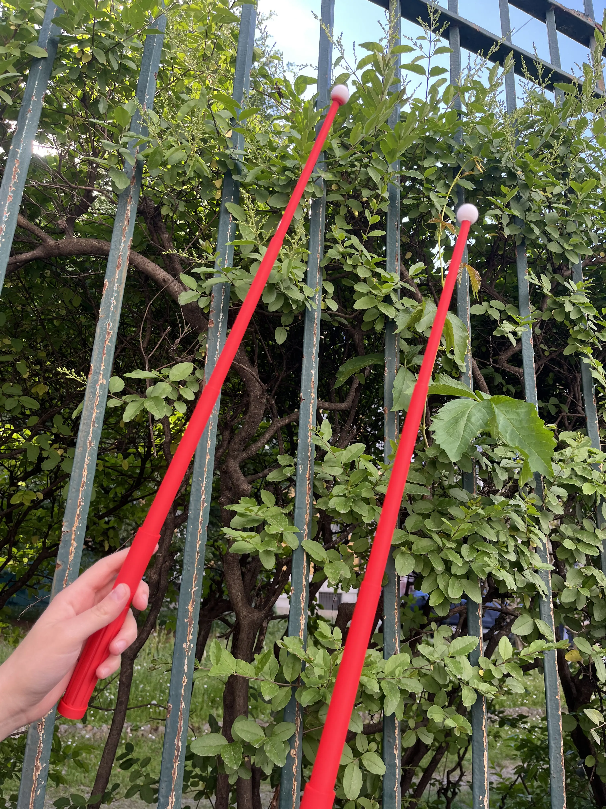
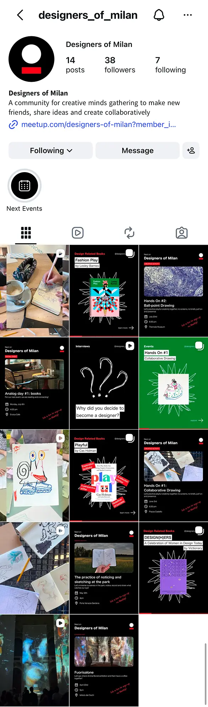
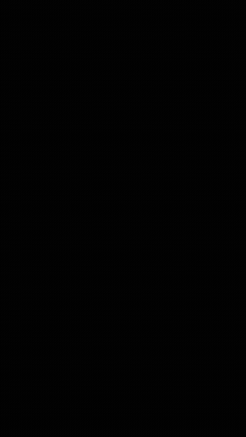
The content system
The Instagram account started with three formats. It now runs on seven, and each one has a job. Some get people to the room, some keep the memory of what happened, and some give the community something to come back for between events. Every format has a template, so a post takes minutes, not an evening, and the feed stays consistent.
Tone of voice
One rule
Getting people to the room
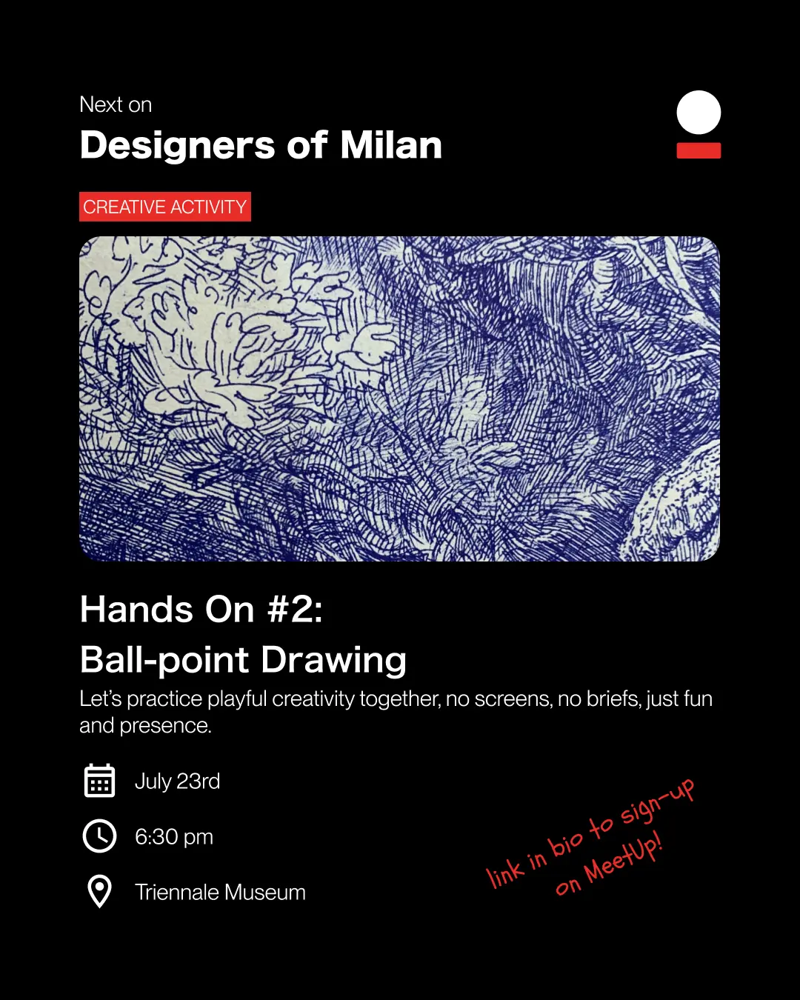
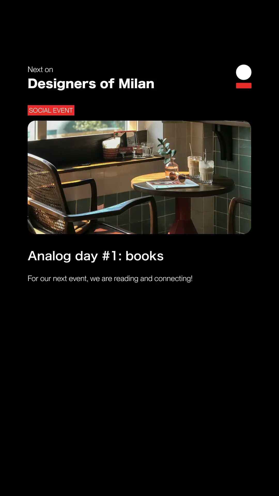
Keeping the memory
Between events
Design books are carousels: one book at a time, why we love it, what it taught us. Below, Playful by Cas Holman.
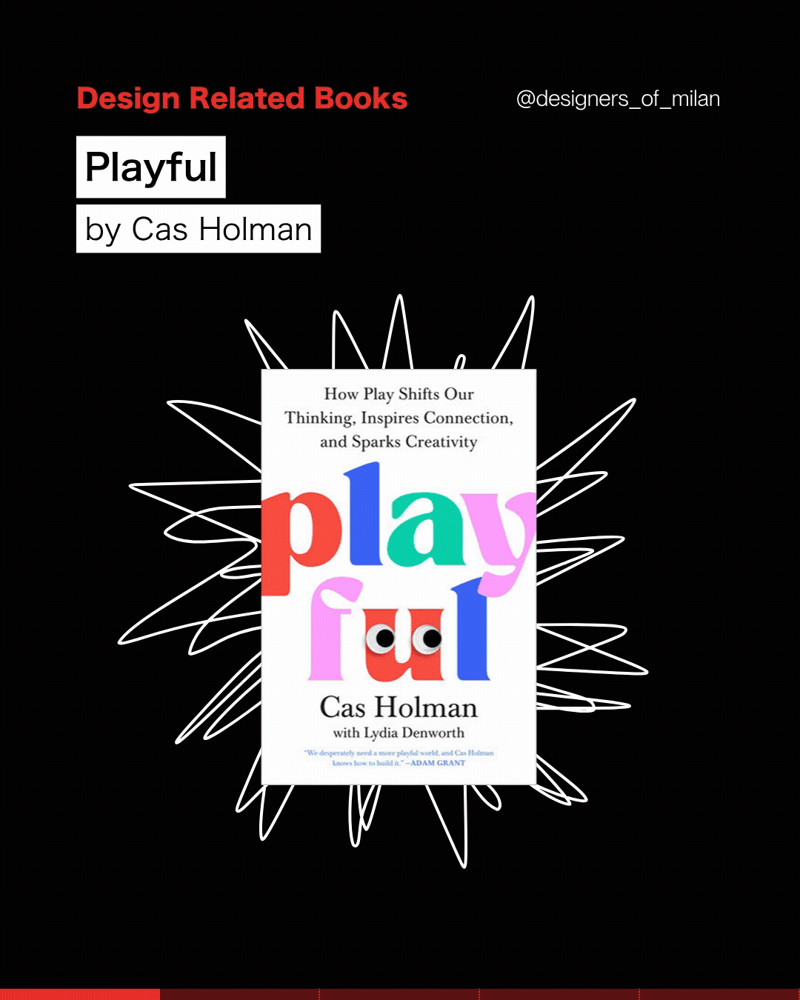
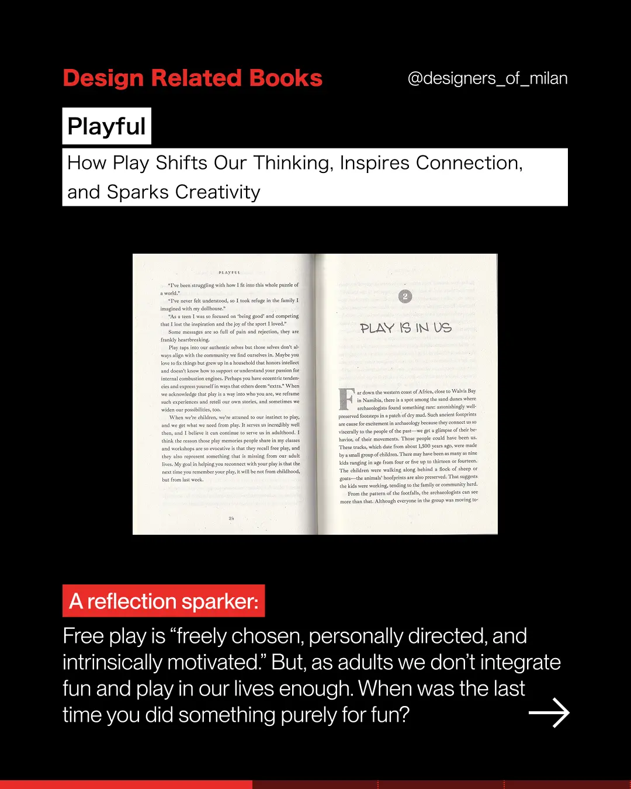
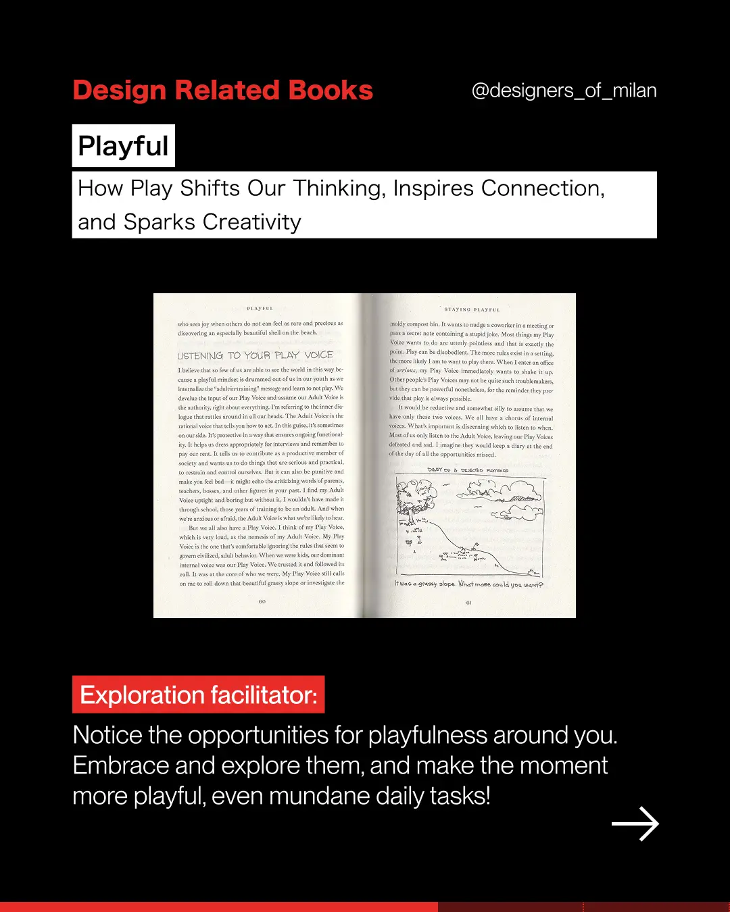
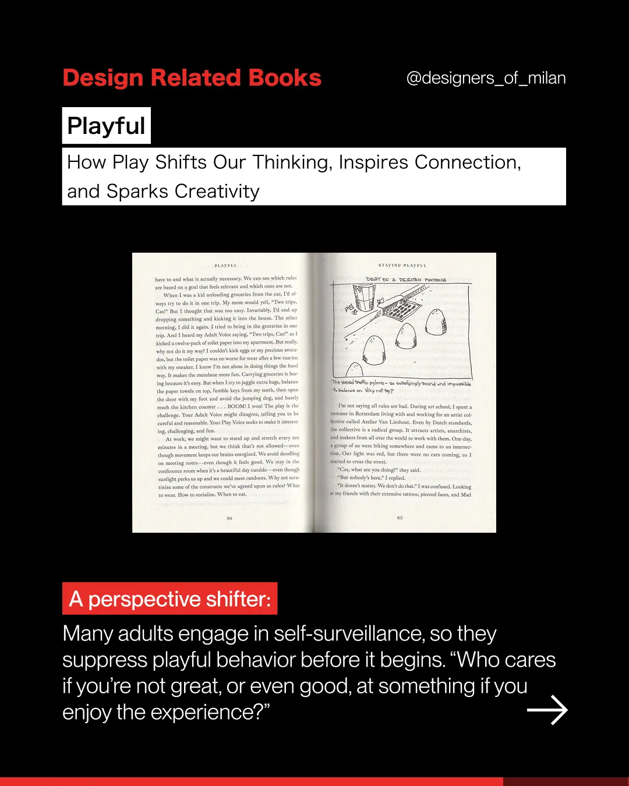
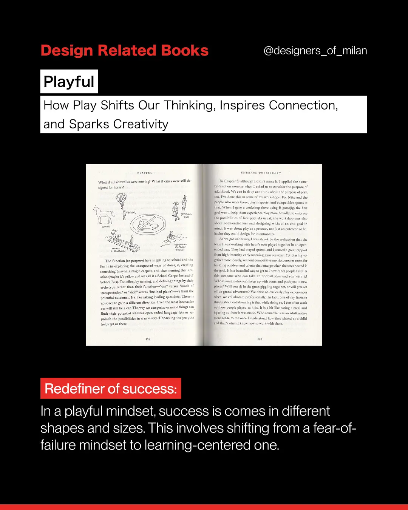
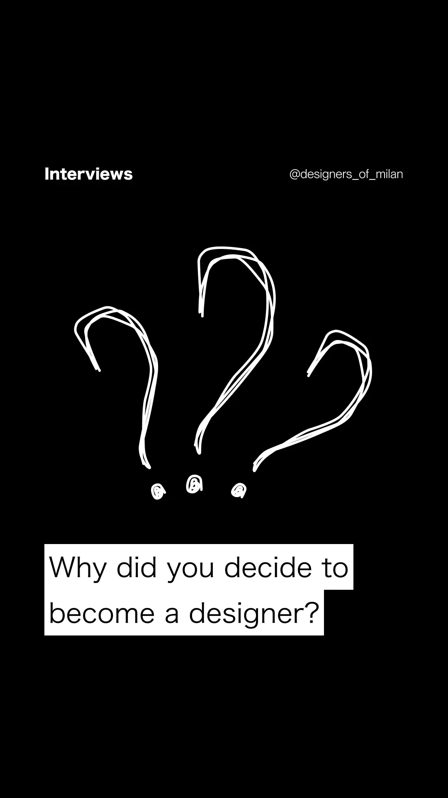
Where it is now
Designers of Milan is ongoing. Events keep happening, the community keeps growing, the account keeps posting. What started as a hunch, that the city's design community wanted something less formal and more human, turned into something real.
5.0
Average Meetup rating across 10 reviews
The recurring words across the reviews tell the whole story, exactly the feeling we set out to design for:
The biggest thing I have learned from building it is that communities are designed too. The format of the events, the tone of the posts, the choice to write in English, the colours, the typography: every one of those is a design decision, and every one of them shapes whether someone feels welcome enough to show up.